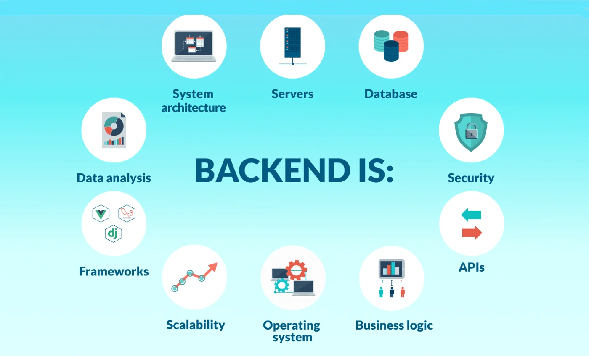

- Front-End Development
Front-end development is the process of creating the visual and interactive parts of a website or web application — everything that users see and directly interact with in their browser. It involves designing layouts, adding styles, and building features that make the website user-friendly, attractive, and responsive across different devices like mobiles, tablets, and desktops.
Front-end developers use core technologies such as HTML (for structure), CSS (for design and layout), and JavaScript (for interactivity). They may also work with frameworks and libraries like React, Angular, or Vue.js to build modern, dynamic websites more efficiently.
The main goal of front-end development is to ensure a smooth user experience by focusing on performance, accessibility, and responsive design, so the website looks great and works perfectly for all users.

- Back-End Development
Back-end development focuses on the server side of a website or web application — the part that users cannot see but which powers everything they interact with on the front end. It deals with handling data, server logic, and communication between the website and its database. Essentially, it makes sure that when a user performs an action on a site, like logging in or making a purchase, the system processes it correctly and securely.
Back-end developers work with programming languages and technologies such as Python, Java, PHP, C#, and Node.js, along with databases like MySQL, PostgreSQL, or MongoDB. They also build and maintain APIs (Application Programming Interfaces) to allow smooth communication between different parts of a system or even between different apps.
The main goal of back-end development is to ensure reliability, security, and efficiency of the website. Without a strong back-end, even the most beautiful front-end design cannot function properly.

- Full-Stack Development
Full-Stack Development
Full-stack development is the process of building both the front-end and back-end of a website or web application. A full-stack developer has the skills to handle everything from designing the user interface to managing the server, database, and application logic. This makes them highly versatile because they can create a complete web project from start to finish without relying heavily on separate specialists.
For the front-end, full-stack developers work with technologies like HTML, CSS, and JavaScript to create interactive and responsive designs. They may also use frameworks and libraries such as React, Angular, or Vue.js to make development faster and more efficient.
On the back-end, they work with programming languages like Node.js, Python, PHP, or Java, and use databases such as MySQL or MongoDB to manage data and handle server operations. The back-end is responsible for processing requests, handling data, and ensuring that the website runs smoothly and securely.
One popular example of a full-stack technology set is the MERN stack, which is entirely JavaScript-based and ideal for modern web applications. It includes four main components: MongoDB, which acts as the database to store and manage data in a flexible, document-based structure; Express.js, a lightweight framework that simplifies building back-end routes and APIs; React, which is used on the front-end to create dynamic, user-friendly interfaces; and Node.js, which runs JavaScript on the server side and powers the back-end. These technologies work together seamlessly, allowing developers to build everything from interactive user interfaces to complex server logic using a single language, JavaScript. This makes the development process faster, more efficient, and easier to maintain.
The main advantage of full-stack development is efficiency and flexibility. A full-stack developer understands the entire web development process, making it easier to plan, build, and maintain applications while ensuring smooth communication between the client side and the server side. This makes full-stack developers highly valuable, especially for startups and small teams where one developer can manage multiple roles.